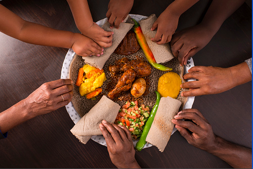

Ethiopia is very unique in many ways, which includes very amazing variety of foods that only exist in Ethiopia! Here we try to show you the glimpse of the countries food variety. But without any exaggeration we haven´t seen even 1% of the countries food types.
These Ethiopian foods are very different from one place of the country to another place, so we can say that different Ethinic groups (to be exact more than 80) have their own food style that passed generations till this day.
Ethiopians are known for eating together, which is not common in many countrires.

Fig. Ethiopians eating together
Here are some links for detailed explanation about the foods!